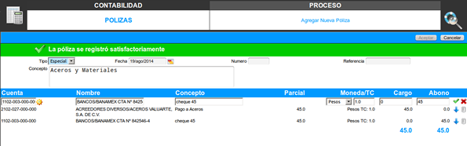

Cuando estamos involucrados en algún proceso como el agregado, cambios etc., los mensajes son el punto clave para saber si vamos por el camino correcto. Los mensajes son generados por el sistema a causa de una acción del usuario. Existen tres tipos de mensajes, los mensajes de "Transacción pendiente", de "Navegador" y de "Transacción terminada" .Mensajes de Transacción pendiente: Estos se generan cuando un proceso al nivel del servidor no puede ser concretado por alguna circunstancia en particular. Existen tres tipos de mensajes de transacción pendiente: - Error.
- Precaución.
- Información.
Mensajes de Navegador: Estos son similares a los primeros solo que el proceso no concretado o erróneo se origina al nivel del navegador. Un ejemplo se da cuando en un campo de número ingresamos un campo alfanumérico. Mensajes de Transacción terminada: Se generan al nivel del servidor cuando todo, y absolutamente todo un proceso es concretado satisfactoriamente. Veamos un ejemplo claro de los mensajes del sistema. Supongamos que deseamos agregar una póliza, una vez que ingresamos al proceso de agregado, la póliza se muestra vacía y sin ningún mensaje 
figura 1, proceso inicial (sin mensaje)
Supongamos que en el campo Debe de nuestra póliza, en el que tenemos que marcar el número decimal 45.00, ingresamos e5.00 e intentamos procesar la partida, entonces esto nos genera un mensaje de Navegador que luce de la siguiente manera:

figura 2, mensaje de navegador
En este ejemplo, las partidas del Debe y Haber de la póliza deben ser iguales pero eso se verifica al nivel del servidor y si, por ejemplo, agregamos nuestro debe con 45.00 y nuestro haber con 35.00 y damos Aceptar para que se registre nuestra póliza, el sistema nos manda un mensaje de Transacción pendiente, que en este caso figura un mensaje de error que luce así:

figura 3, mensaje de error
Como podemos ver, los mensajes a nivel del servidor lucen claramente diferentes a los mensajes al nivel del navegador, ya que los de navegador lucen como alertas emergentes y los de servidor se muestran siempre en la parte superior justo debajo del cabecero del proceso. En este caso, es un mensaje de error y se muestra en color rojo. Los mensajes de precaución se muestran en amarillo y los de información en azul.
Por último y siguiendo nuestro ejemplo, suponiendo que el Debe y el Haber de nuestra póliza ya coincide, al aceptar, nuestro registro pasará todas las pruebas del sistema, y un mensaje a nivel de servidor de transacción terminada en color verde, surgirá en la parte superior justo debajo del cabecero del proceso, como se muestra a continuación:

figura 4, mensaje de transacción terminada
|